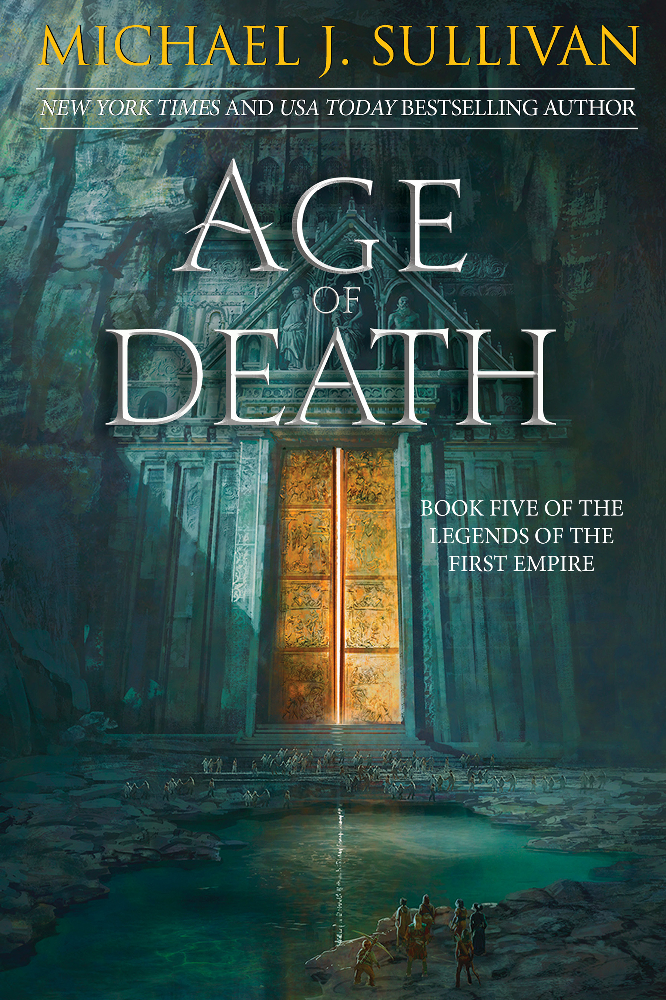

"Age of Death"
- Read on 2023-07-02
- Rating: ️️️️️
- Format: 🎧 (13 hours 57 minutes)
I’m not a fan of the cliffhanger endings which these last two books have had. However, this book’s ending felt like a more natural point to pause the story, however briefly. I’m glad I waited for all the books in the series to be released before I read the series, otherwise the cliffhangers would have been really annoying. This book went to a new place, in a variety of ways. I’m interested to see how the final book wraps things up, with so many new things introduced.
- Prior: Age of Legend
- Next: Age of Empyre